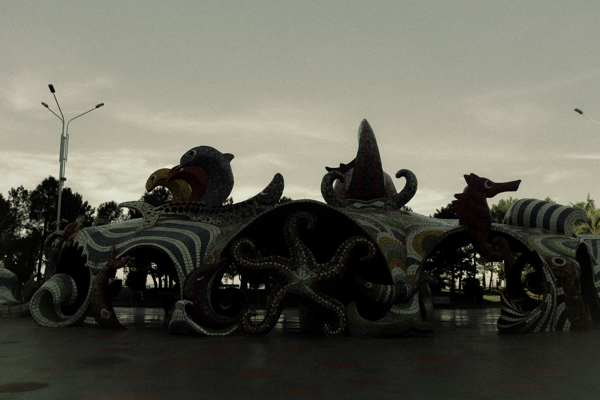
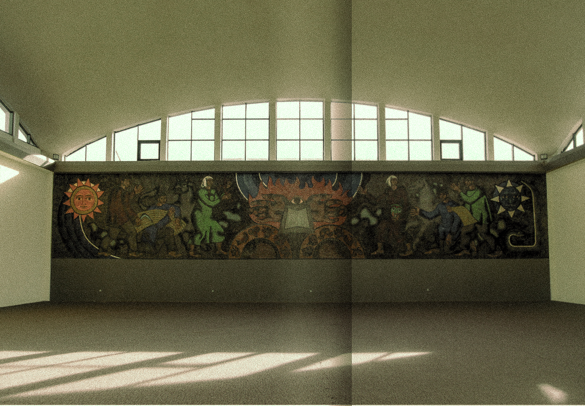
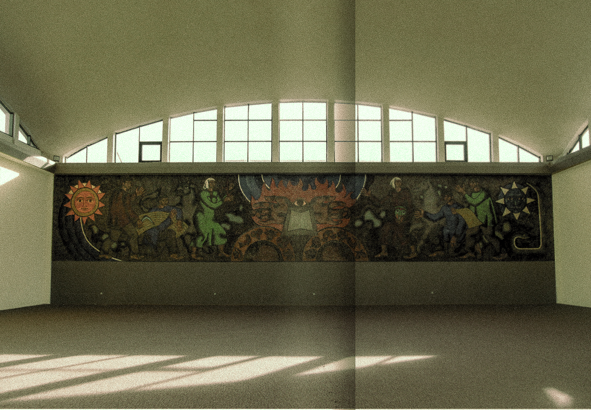

 


Mosaic art has
been popular across the globe, notably in the 20th century.
Artists in North and South America, Japan, and throughout Europe have
embraced this form. Contrary to the misconception that certain countries, especially the
Soviet Union, were the sole pioneers of mosaics, the art form flourished simultaneously in Poland,
Austria, Germany, France, and other remnants of the Soviet Union.
The prevalence of mosaic
art within the Soviet Union can be attributed to substantial investments in various fields, including
science and sports, not solely in art. The theme of achievement and the pursuit of superiority are common
threads in many mosaic pieces across the 15 republics of the Soviet Union, including Georgia.
Particularly noteworthy are mosaic artworks in Georgia created between the 1960s and 1980s,
reflecting the country's struggle for independence after the Soviet Union dissolved.
For almost 30 years, mosaic art in Georgia remained largely
undocumented and unexplored. In 2012, systematic studies began to document
and research all existing mosaics in the country, given the lack of official
information in archives or libraries. The first Soviet mosaics in Georgia
emerged in 1961-63 by artists like Guram Kalandadze, Leonardo Shengelia,
Aliko Gorgadze, and Tezi Asatiani.
Mosaic art, with a history of about
4000 years, encompasses two main techniques: the Roman mosaic technique,
using small cubes of glass or stone, and the Florentine mosaic technique, utilizing
thin plates of colorful marble and jasper. The art of mosaic has deep historical roots,
including in Georgia, where archaeological excavations in the 1970s revealed mosaic
flooring from the 2nd century near the village of Dzalisi.
GEORGIAS HISTORY WITH MOSAIC ART

National Science Library , Tbilisi